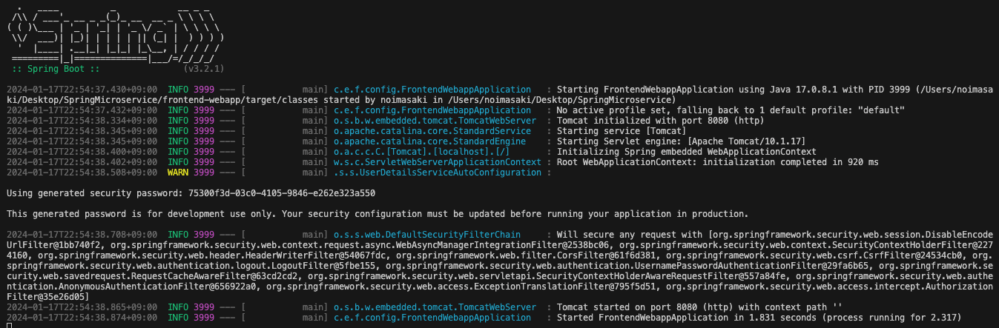
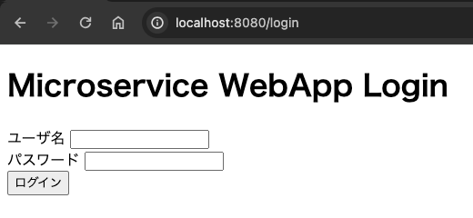
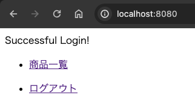
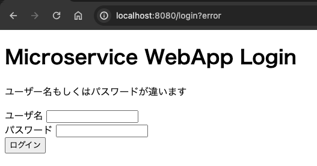
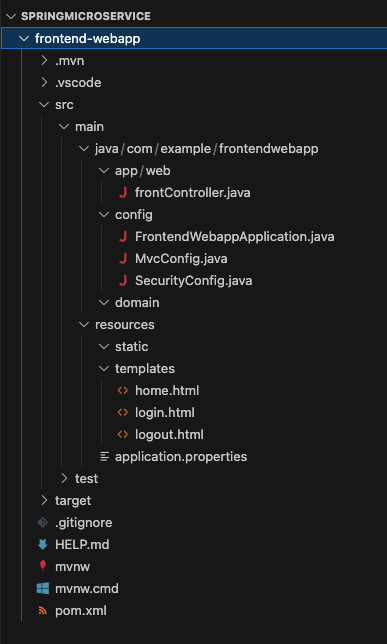
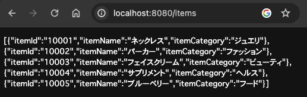

マイクロサービス作成
実施すること
認証認可機能を持ったBFF（Backend for Frontend）と、商品情報のCRUD操作のAPIを提供するバックエンドサービスを作成する。
ユーザはブラウザからBFFにアクセスし、認証成功後にバックエンドサービスにアクセスすることができる。
作成の流れ
BFFの作成
バックエンドの作成
BFF改修：BFF -> バックエンドへアクセス可能とする
BFF改修：バックエンドから受け取ったjsonを画面に表示する
1. BFFの作成
1-1. プロジェクト作成（Spring Initializr）
Java: 17
SpringBoot: 3.2.1
dependencies: spring-boot-starter-web
dependencies: spring-boot-starter-security
dependencies: spring-boot-starter-thymeleaf
1-2. ディレクトリ構成変更
可読性向上の為、.javaが含まれるディレクトリを以下のように変更する。
SpringMicroservice/frontend-webapp/src/main
├── java
│ └── com
│ └── example
│ └── frontendwebapp
│ ├── app
│ ├── config
│ │ └── FrontendWebappApplication.java
│ └── domain
└── resources
├── application.properties
├── static
└── templates
| ディレクトリ | 役割 |
|---|---|
| app | アプリケーション層に関するもの |
| config | Spring Bootの設定クラスを配置する。起動クラス、Webアプリケーションの設定、セキュリティ設定、データベース接続など |
| domain | ServiceクラスやRepositoryクラスなど |
1-3. .html作成
ログインページ
<!DOCTYPE html>
<!-- Thymeleafを有効化 => th:XXXX という属性を各タグに追加することで利用可能 -->
<html xmlns:th="http://www.thymeleaf.org">
<head>
<title>ログインページ</title>
</head>
<body>
<h1>Microservice WebApp Login</h1>
<!-- URLパラメータに「error」が含まれていたら、メッセージ出力 -->
<div th:if="${param.error}">
<p>ユーザー名もしくはパスワードが違います</p>
</div>
<!-- ユーザ名・PWをサーバへ送信するためのForm -->
<!-- submitボタンが押下された時のaction（URLパス`/login`へ`post`する）※@はthのリンク記法 -->
<!-- `action="#" はThymleafが有効化されていれば上書きされる -->
<form action="#" th:action="@{/login}" method="post">
<div>
<label for="usernameInput">ユーザ名</label>
<input type="text" id="usernameInput" name="username">
<!-- name="username"はSecurityConfig.javaにてフィールド名指定を合わせる必要がある -->
</div>
<div>
<label for="passwordInput">パスワード</label>
<input type="password" id="passwordInput" name="password">
<!-- name="password"はSecurityConfig.javaにてフィールド名指定を合わせる必要がある -->
</div>
<div>
<button type="submit">ログイン</button>
</div>
</form>
</body>
</html>
ログイン後に表示されるホームページ
<!DOCTYPE html>
<html xmlns:th="http://www.thymeleaf.org">
<head>
<title>Welcomeページ</title>
</head>
<body>
<div>Successful Login!</div>
<ul>
<li><a href="./items.html" th:href="@{/items}">商品一覧</a></li>
</ul>
<ul>
<li><a href="./logout.html" th:href="@{/logout}">ログアウト</a></li>
</ul>
</body>
</html>
ログアウトページ
<!DOCTYPE html>
<html xmlns:th="http://www.thymeleaf.org">
<head>
<title>ログアウトページ</title>
</head>
<body>
<h1>Microservice WebApp Logout</h1>
<form action="#" th:action="@{/logout}" method="post">
<div>
<button type="submit">ログアウト</button>
</div>
</form>
</body>
</html>
1-4. frontController.java作成
package com.example.frontendwebapp.config;
import org.springframework.stereotype.Controller;
import org.springframework.web.bind.annotation.GetMapping;
@Controller
public class frontController {
@GetMapping
public String home(){
return "home";
}
@GetMapping("/login")
public String showLogin(){
// Thymeleafを利用しているため、記載で`/resources/templates/login.html`をreturnする
return "login";
}
@GetMapping("/logout")
public String showLogout(){
return "logout";
}
}
1-5. MvcConfig.java作成
今回作成したディレクトリ構成だと、SpringBootの起動クラスであると、コントローラクラスであるは別ディレクトリに存在するため、そのままだとコントローラクラスが読みこまれずに正常に画面遷移することができない。（起動クラスと同ディレクトリおよびサブディレクトリは自動的に読み込んでくれる）
そこで、``を作成することで明示的にコントローラクラスを読み込む。
package com.example.frontendwebapp.config;
import org.springframework.context.annotation.ComponentScan;
import org.springframework.context.annotation.Configuration;
import org.springframework.web.servlet.config.annotation.WebMvcConfigurer;
@Configuration
@ComponentScan("com.example.frontendwebapp.app.web") //Controllerクラスは別ディレクトリなので読み込んであげる
public class MvcConfig implements WebMvcConfigurer{
}
1-5. SecurityConfig.java作成
SpringSecurityの挙動をカスタムする
package com.example.frontendwebapp.config;
import org.springframework.context.annotation.Bean;
import org.springframework.context.annotation.Configuration;
import org.springframework.security.config.annotation.web.builders.HttpSecurity;
import org.springframework.security.config.annotation.web.configuration.EnableWebSecurity;
import org.springframework.security.web.SecurityFilterChain;
@Configuration
@EnableWebSecurity
public class SecurityConfig {
// 戻り値がBeanに登録される。BeanとはDIコンテナに登録されるオブジェクトのこと。結果として任意の場所でAutowiredできる。
@Bean
protected SecurityFilterChain configure(HttpSecurity http) throws Exception {
http
.authorizeHttpRequests((requests) -> requests
.requestMatchers("/login/*").permitAll() // "/login"は認証不要
.anyRequest().authenticated() // その他のリクエストは認証が必要
)
.formLogin((form) -> form // 認証方式はformログイン
.loginPage("/login") // 認証ページは"/login"
.permitAll()
)
.logout((logout) -> logout.permitAll()); // ログアウト機能を有効化し、すべてのユーザがログアウト可能
return http.build();
}
// @Bean
// public PasswordEncoder passwordEncoder() {
// return new Pbkdf2PasswordEncoder();
// }
// userDetailsServiceやpasswordEncoderについてはAutowiredできるものがあれば、自動でAutowiredして利用してくれるので不要。
// userDetailsServiceはCustomUserDetailsServiceの中で@ServiceアノテーションをつけてServiceとしてDIコンテナに登録しているので、Springは勝手に読み取って使ってくれる
// passwordEncoderについても同様に、PasswordEncoderConfigの中で@BeanをつけてDIコンテナに登録しているので、Pbkdf2PasswordEncoderを自動で使ってくれる
}
1-6. 動作確認
ここまで作成することで、認証認可機能を持ったBFFが動作する。

ログイン画面

ログイン成功→ホームページが表示

ログアウトリンク押下→ログアウト画面

ID/PWが異なる場合にはログイン出来ずにメッセージ出力される

Springプロジェクトは以下のような構成となっているはず。

2. バックエンドの作成
ここからは、BFFから呼び出されるバックエンドを作成する。商品情報の参照、登録、更新、削除のREST APIを提供する。ただし、まずは商品情報参照機能のみを提供し、その他の機能は別途追加する。
2-1. プロジェクト作成（Spring Initializr）
Java: 17
SpringBoot: 3.2.1
dependencies: spring-boot-starter-web
2-2. ディレクトリ構成変更
BFFと同様とする。
2-3. モデル作成
商品情報のモデルを作成する。
Getter・Setterおよびコンストラクタは、VS codeの補完機能を使うと自動で作成が可能。右クリックからソースアクション > Generate Getters and Setters...とソースアクション > Generate Constructors...を選択。
package com.example.backenditem.domain.model;
public class Item {
private String itemId; //商品ID
private String itemName; //商品名
private String itemCategory; //商品カテゴリー
// コンストラクタ
public Item(String itemId, String itemName, String itemCategory) {
this.itemId = itemId;
this.itemName = itemName;
this.itemCategory = itemCategory;
}
// GetterおよびSetter
public String getItemId() {
return itemId;
}
public void setItemId(String itemId) {
this.itemId = itemId;
}
public String getItemName() {
return itemName;
}
public void setItemName(String itemName) {
this.itemName = itemName;
}
public String getItemCategory() {
return itemCategory;
}
public void setItemCategory(String itemCategory) {
this.itemCategory = itemCategory;
}
}
2-4. サービス作成
コントローラから呼ばれるビジネスロジックであるサービスクラスを作成する。 なお、ここでは前述の通り、参照機能のみをまずは実装する。
package com.example.backenditem.domain.service;
import java.util.Arrays;
import java.util.List;
import org.springframework.stereotype.Service;
import com.example.backenditem.domain.model.Item;
@Service
public class ItemService {
private List<Item> allItems = Arrays.asList(
new Item("10001", "ネックレス", "ジュエリ"),
new Item("10002", "パーカー", "ファッション"),
new Item("10003", "フェイスクリーム", "ビューティ"),
new Item("10004", "サプリメント", "ヘルス"),
new Item("10005", "ブルーベリー", "フード")
);
// 全てのItemリストを返すメソッド
public List<Item> getAllItems() {
return allItems;
}
// 個別のItemを返すメソッド
public Item getItem(String itemId) {
for (int i=0; i<allItems.size(); i++){
if (allItems.get(i).getItemId().equals(itemId)) {
return allItems.get(i);
}
}
return null; // itemIdが見つからなかったらnullを返す
}
}
今回のディレクトリ構造では、@Serviceアノテーションを付与したサービスクラスがSpring起動クラスとは別ディレクトリとなっているため、自動でComponentscanされない。よって、明示的にサービスクラスをComponentscanの対象にする必要がある。
package com.example.backenditem.config;
import org.springframework.context.annotation.ComponentScan;
import org.springframework.context.annotation.Configuration;
@Configuration
@ComponentScan("com.example.backenditem.domain.service")
public class DomainConfig {
}
2-5. コントローラ作成
package com.example.backenditem.app.web;
import java.util.List;
import org.springframework.beans.factory.annotation.Autowired;
import org.springframework.web.bind.annotation.GetMapping;
import org.springframework.web.bind.annotation.PathVariable;
import org.springframework.web.bind.annotation.RestController;
import com.example.backenditem.domain.model.Item;
import com.example.backenditem.domain.service.ItemService;
@RestController
public class ItemController {
@Autowired
private ItemService itemService;
// @GetMappingで"/items"へアクセスしたときにgetAllItems()を実行
@GetMapping("/items")
public List<Item> getAllItems() {
return itemService.getAllItems();
}
// @GetMapping("/items")
// public String getAllItems() {
// return "ALL items !!";
// }
// 全てのitemではなく、itemIdで個別の情報を返す
@GetMapping("/items/{id}")
public Item getItem(@PathVariable("id") String id){
return itemService.getItem(id);
}
}
BFFと同様に、コントローラクラスがSpringの起動クラスとは別ディレクトリにあるため、ComponentScanを実施する必要がある。
package com.example.backenditem.config;
import org.springframework.context.annotation.ComponentScan;
import org.springframework.context.annotation.Configuration;
import org.springframework.web.servlet.config.annotation.WebMvcConfigurer;
@Configuration
@ComponentScan("com.example.backenditem.app.web") //Controllerクラスは別ディレクトリなので読み込んであげる
public class MvcConfig implements WebMvcConfigurer{
}
2-6.動作確認
バックエンドのSpringを起動して（Visual Stadioの場合はバックエンドのフォルダを開き直す必要がある）、指定のURLにアクセスして商品情報がjson形式で取れることを確認する。

3. BFF改修：BFF -> バックエンドへアクセス可能とする
ここまでで、認証機能を持つBFF、商品情報を返すバックエンドサービスが完成した。ここからは、BFFからバックエンドサービスを呼び出せるように改修する。
3-1. バックエンドサービスのリッスンポート・URLの変更
ローカル環境で開発しているため、BFFのリッスンポートとバックエンドのリッスンポートを別ポート(デフォルト8080→8081）とする。また、バックエンドサービスのURLを/backend/*で受け付けられるように変更する。
上記2点を実現するためには、バックエンドサービスのapplication.propertiesもしくはapplication.ymlを作成・編集することで実現ができ、今回やapplication.ymlを作成して設定をyaml形式で記載する。
server:
servlet:
context-path: /backend
port: 8081
これにより、バックエンドサービスはリッスンポートが8081となり、待ち受けるURLもこれまでhttp://localhost:8080/itemsだったのがhttp://localhost:8081/backend/itemsとなる。
3-2. BFFのサービス追加
クライアントからBFFへ商品情報取得のリクエストがあったときにバックエンドのAPIを呼び出すサービスクラスを追加する。
バックエンドのREST APIを呼び出すために、BFFにてhttpクライアント機能をRestTemplateを利用して実装する。サービスクラスを新たに作成し、RestTemplateを実装する。
package com.example.frontendwebapp.domain.service;
import org.springframework.boot.web.client.RestTemplateBuilder;
import org.springframework.stereotype.Service;
import org.springframework.web.client.RestTemplate;
@Service
public class frontItemService {
private RestTemplate restTemplate;
public frontItemService (RestTemplateBuilder restTemplateBuilder) {
this.restTemplate = restTemplateBuilder.build();
}
public String getAllItems() {
String URL = "http://localhost:8081/backend/items";
String items = restTemplate.getForObject(URL, String.class);
return items;
}
}
Spring起動クラスと別ディレクトリのため、ComponentScanを設定する。
package com.example.frontendwebapp.config;
import org.springframework.context.annotation.ComponentScan;
import org.springframework.context.annotation.Configuration;
@Configuration
@ComponentScan("com.example.frontendwebapp.domain.service")
public class DomainConfig {
}
3-3. BFFのコントローラ改修
package com.example.frontendwebapp.app.web;
import org.springframework.beans.factory.annotation.Autowired;
import org.springframework.stereotype.Controller;
import org.springframework.web.bind.annotation.GetMapping;
import org.springframework.web.bind.annotation.ResponseBody;
import com.example.frontendwebapp.domain.service.frontItemService;
@Controller
public class frontController {
@GetMapping
public String home(){
return "home";
}
@GetMapping("/login")
public String showLogin(){
// Thymeleafを利用しているため、記載で`/resources/templates/login.html`をreturnする
return "login";
}
@GetMapping("/logout")
public String showLogout(){
return "logout";
}
@Autowired
private frontItemService frontItemService;
@GetMapping("/items")
@ResponseBody
// 【@ResponseBody】
// Thymeleafを利用しているため、Stringでreturnしてしまうとhtmlファイル名であると解釈してしまうため、
// htmlファイルではなくてレスポンス本文であることを明示的にするアノテーション
public String showItems(){
return frontItemService.getAllItems();
}
}